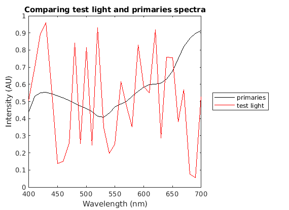
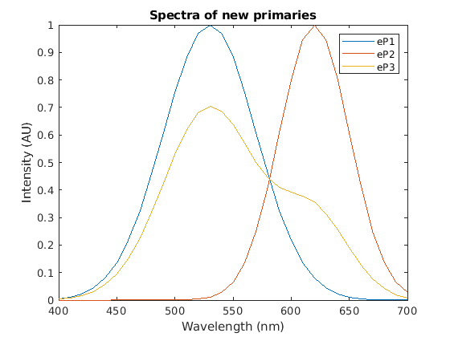

Contents
clear; clc; close all;
a)
load the data from colMatch.mat. Create a random test light of size 31*1 storing intensities from 400 to 700 nm. The primaries are stored in P. The humanColorMatcher can then be run on the test light and the primaries to obtain the three knob settings.
load('colMatch.mat')
light = rand(31, 1);
primaries = P;
[knobs] = humanColorMatcher(light, primaries);
The sum of primaries is the weighted average of the three primaries by the knob settings obtained from the humanColorMatcher. Plotting the spectra of sum of primaries with the test light shows that the two spectra are not identical. However, they did appear perceptually identical to the humanColorMatcher. The reason for this is that the actual lights stay in a higher dimensional space (in this case 31-dimensional). However, the humans have only 3 cones and can perceive the projection of this higher dimensional light onto the 3-dimensional space. Therefore, eventhough the lights are spectrally distinguishable in the higher dimensional space, their projection onto the lower dimensional space is indistinguishable to humans. Such pairs of lights are called metamers.
sum_of_primaries = primaries * knobs; figure(1); plot(wl, sum_of_primaries, 'k', 'DisplayName', 'primaries', ... 'LineWidth', 0.5) hold on; plot(wl, light, 'r', 'DisplayName', 'test light', ... 'LineWidth', 0.5) xlabel('Wavelength (nm)') ylabel('Intensity (AU)') title('Comparing test light and primaries spectra') legend('location','eastoutside')
b)
Let H1 be the color-matching matrix in my lab and H2 be the color-matching matrix in Dr. Evo's lab. The set of primaries for me are P and the set of primaries for Dr. Evo are eP.
Let l be the random test light, then the color-matching experiment in Dr. Evo's lab is:
eP * H2 * l ~ l
Both sides of the equation are lights that appeared perceptually identical in Dr. Evo's lab. Hence when these lights are tested in my lab, they should appear identical too.
Hence we have:
H1 * eP * H2 * l = H1 * l
Therefore, H1 * eP * H2 = H1
Therefore, H2 = (H1 * eP)^-1 * H1
This equation computes the color-matching matrix in Dr. Evo's lab given the color-matching matrix in my lab and the primaries used by Dr. Evo.
The color-matching matrix in my lab can be computed by passing 31 different monochromatic test lights into the humanColorMatcher one at a time to obtain values in each column of H1. This can be done in one step by using an identity matrix of size 1. Using the derivation from above, we can then compute H2
H1 = humanColorMatcher(eye(31), P); H2 = pinv(H1 * eP) * H1;
The goal of the next part is to determine if the predicted knob settings and the actual knob settings are identical for a random test light.
act_knobs = H1 * light pred_knobs = H1 * eP * H2 * light
act_knobs =
0.7906
0.3553
0.0472
pred_knobs =
-0.0050
0.3404
0.0643
As can be seen the predicted knob settings do not match the actual knob settings. This is the case because the new primaries are not linearly independent from each other. One way to check for this is by creating a plot of the new primaries:
figure(2); plot(wl, eP) legend('eP1', 'eP2', 'eP3') xlabel('Wavelength (nm)') ylabel('Intensity (AU)') title('Spectra of new primaries')
From the plot we can see that the eP3 curve exhibits two peaks that align very well with the peaks of eP1 and eP2. Therefore, it appears that eP3 is a linear combination of eP1 and eP2 vectors (or close to being a linear combination). However, the linear dependence is not prominent just by visualization.
Another way to check for the linear dependence of the three primaries is to look at the diagonal elements of the S matrix obtained upon SVD. Performing SVD on eP, we get:
[eU, eS, eV] = svd(eP); diag(eS)
ans =
3.4837
2.1733
0.0000
The final element along the diagonal of S is almost 0. Hence the third vector is a linear combination of the other two vectors. Thus, resulting in linearly dependent primaries which violate the assumptions of the color-matching experiment. For H1 * eP to be invertible, the columns of eP have to be linearly-independent.
c)
Visualizng the Cones spectral sensitivies
figure(3) plot(wl, Cones', 'LineWidth', 2) legend('L', 'M', 'S') xlabel('Wavelength (nm)') ylabel('Responsitivity of the cone (AU)') title('Responsivity curves for the three cones')
For the old primaries, the resulting light obtained by the combination of the primaries with the obtained knob settings from the color matching experiment are:
prim_light = P * knobs;
We have to determine if the responses for the cones from the randomly generated test light and the combination of the primaries are the same.
response_test_light = Cones * light response_prim_light = Cones * prim_light
response_test_light =
4.5820
3.4875
2.6311
response_prim_light =
4.5820
3.4875
2.6311
As can be seen the responses from the cones for the primary lights with the knob settings obtained from the color matching experiment and the responses from the cones for the test light are exactly identical. This is an informal way of justifying that the cones provide a physical explanation of the color matching experiment.
The color matching experiment can be defined in terms of the C = Cones, t = test_light, P = primaries, and k = knob settings. The response of the cones to the test lights is the same as the response of the cones to the combination of the primaries. The response of the cones to the test light is Ct. The combination of primaries with the given knob settings is Pk and hence the response of the cones to the combination of the given primaries is CPk. Therefore, the color matching experiment can be summarized as:
Ct = CPk
Thus the knob settings for the color matching experiment can be obtained for any given test light as:
k = (CP)^-1*C*t
As shown earlier, the color matching matrix M = (CP)^-1*C and hence the result can be summarized as:
k = Mt
We can then write the code to compute the knob settings given the primaries and test light using the above procedure.
knobs knobs_manual = inv(Cones * P) * Cones * light
knobs =
0.7906
0.3553
0.0472
knobs_manual =
0.7906
0.3553
0.0472
These knob settings match the knob settings obtained from the humanColorMatcher function